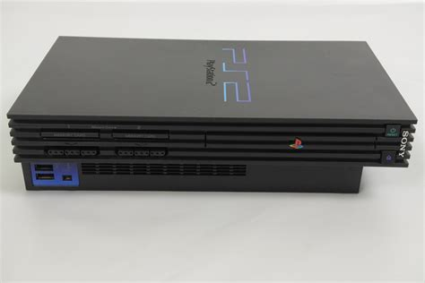

Playstation-2 SHCP-10000
Playstation-2 SHCP-10000
Sony Computer Entertainment tarafından geliştirilen ve üretilen bir ev video oyunu konsolu olan PlayStation 2'nin orijinal modeline atıfta bulunur. SCPH-10000 modeli ilk olarak 4 Mart 2000'de Japonya'da piyasaya sürüldü ve sonrasında 2000'nin sonlarında ve 2001'in başlarında Kuzey Amerika, Avrupa ve Avustralya'da satışa sunuldu. Geliştirilmiş grafik özellikleri, PlayStation oyunlarıyla geriye dönük uyumluluk ve DVD oynatma desteği gibi birçok iyileştirmeye sahipti. PlayStation 2, dünya çapında 155 milyondan fazla satış yaparak tüm zamanların en çok satan video oyunu konsollarından biri haline geldi.